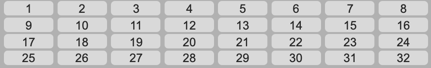

Song Grid
When a song is loaded, its grid will appear. The cells of the grid change color depending on whether Djazz is engaged and whether a cell is currently playing or not. The colors represent the following:
- Light gray: not the current measure/chapter of the song
- Dark gray: the current measure measure/chapter of the song, but Djazz is not engaged
- Blue: the current measure measure/chapter of the song, but not playing
- Orange: the current measure measure/chapter of the song, and playing
1. Chapter Select
At the top are listed the “chapters” of the song–different sections like verses, choruses, and bridges. Clicking on a chapter will take you to the first measure of the chapter. If Djazz is engaged, it will start playing from here when the next beat is received.
2. Bar Select

When a chapter is selected, the bars in the chapter are shown below it. Each bar contains the number of beats given by the song’s time signature. Clicking on a bar will take you to the first beat in the bar. If Djazz is engaged, it will start playing from here when the next beat is received.
3. Rewind-to-beginning Button
Click to go to the beginning (first bar of first chapter) of the song.
4. Lock button
When the lock button next to the rewind button is on, Djazz will rewind to the beginning of the song every time it is disengaged (i.e., when the metronome is turned off, or when the engage button is unselected in manual or remote beat input.)
5. Loop Button
When selected, Djazz will loop the current chapter or the whole song, depending on the choice selected to the right of the button. That is, it will start from the beginning immediately when the end of the current chapter or song is reached
5. Loop-Chapter/Song Select
Selects whether to loop the current chapter or the whole song when the loop-chapter button is on.